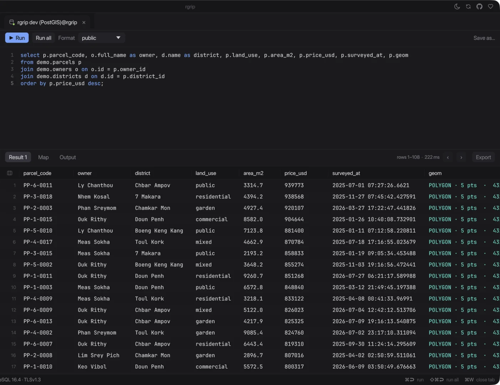
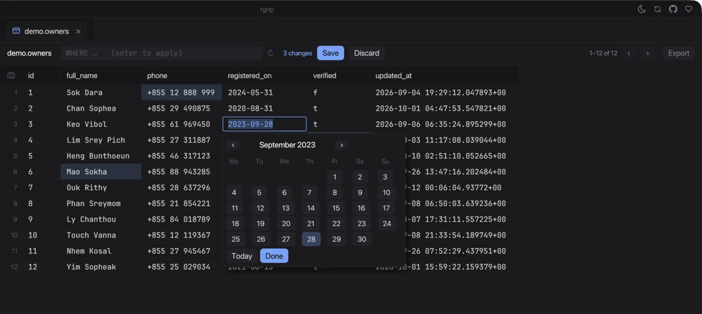
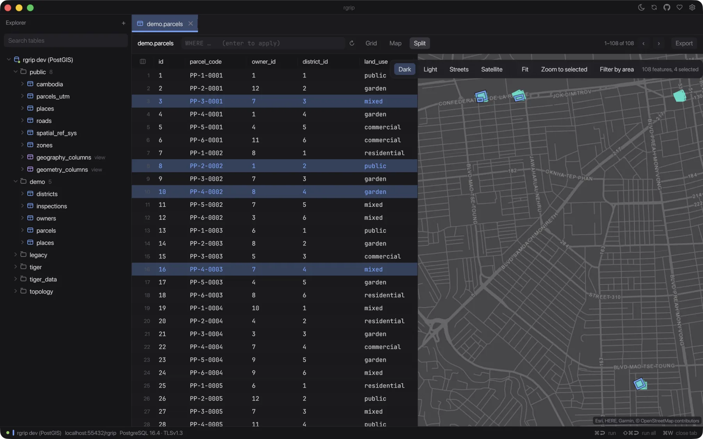
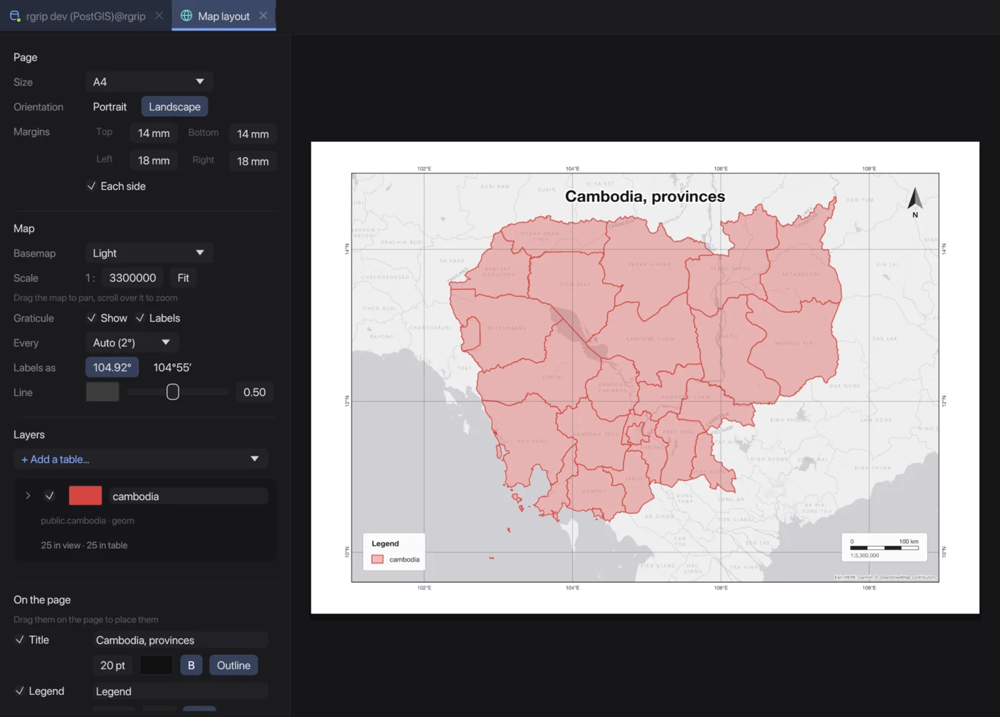
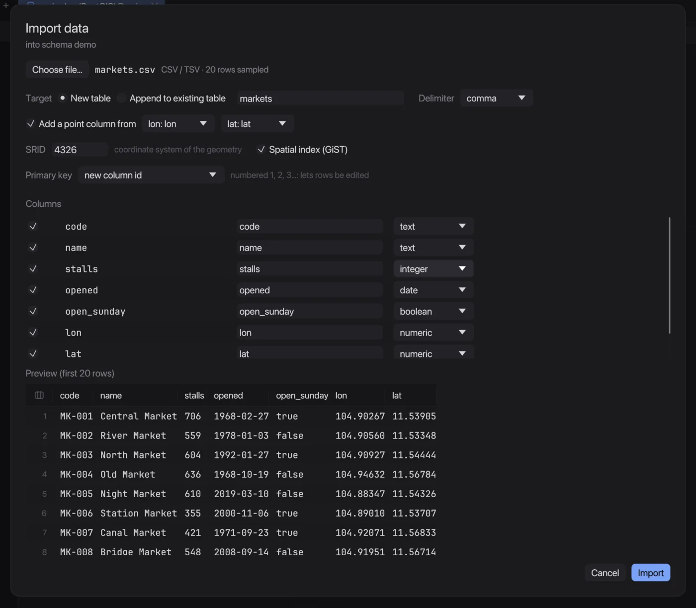

Features
What rgrip does today, version 0.0.12. It's alpha, so the list grows with each release; the changelog has the details.
SQL console
Write a query, run it, read the rows. Results sit under the editor, with a map tab when there's geometry in them.

- Autocomplete
- Schemas, tables, columns and aliases as you type.
- Formatter
- Tidy a query in one click.
- Slash commands
/countand friends expand to SQL. Edit them, or add your own.- Comments and pairs
- ⌘/ toggles
--comments; quotes and brackets close themselves. - Sort results
- Click a column header. Paged results sort on the server.
- Run one or all
- Run the statement under the cursor, or the whole script.
Browse and edit
Open a table and change it in place. Edits wait as pending changes until you save, and then go in one transaction.

- Edit in place
- Double-click a cell; dates get a picker.
- Edit table
- Rename, add, retype and drop columns, defaults and the key, with the SQL shown first.
- Add a primary key
- For tables that have none, so they can be edited.
- Related rows
- Follow foreign keys, or relations inferred from column names.
- Filter and sort
- A
WHEREbox over the grid, and sorting by any column. - Freeze and go to
- Pin columns while you scroll, or jump to one by name.
Map
Any query or table with geometry shows on a map. Put it next to the grid and the two share one selection.

- Split view
- Grid and map side by side, resizable.
- Linked selection
- Select rows to light up features; click a feature to select its row.
- Zoom to selected
- Fit the map to the rows you picked.
- Filter by area
- Draw a box on the map to filter the table.
- Reprojection
- WGS 84, Web Mercator and UTM, done in the client.
- Basemaps
- Dark, light, streets or satellite.
Map layouts
A tab for making a map you can print or send: tables as layers, a page, and the things a map needs on it.

- Layers from tables
- Several tables, each with its own filter, color and line width.
- Color by a column
- Categories come from what's in view; rename them in the legend.
- Place by dragging
- Title, legend, scale bar and north arrow snap to the page and the frame.
- Page
- A4, A3, Letter and more, portrait or landscape, margins per side.
- Graticule
- Decimal or degrees and minutes, labelled outside the frame.
- PDF and PNG
- Vector PDF, or PNG at the DPI you choose.
Import
Right-click a schema and pick a file. Check the preview and the column types, then import into a new table or one you have.

- CSV and TSV
- The delimiter is found for you; lon and lat become a point.
- GeoJSON and Shapefile
- The SRID is read from the
.prj. - Types you can change
- Names and types are guessed, and editable before import.
- All or nothing
- One transaction; any error rolls it all back.
Export
Get rows out the way the next tool wants them.
- Files
- CSV, TSV, JSON, GeoJSON, Markdown, SQL
INSERTand SVG. - Copy as an image
- Selected rows as a picture, ready to paste.
- Copy for an AI agent
- Markdown with the query, the column types and the rows.
- Map as PNG
- A quick export from the map view, with a title and legend.
Get rgrip
Free and open source, for Apple silicon Macs. The first time, right-click rgrip.app and choose Open.